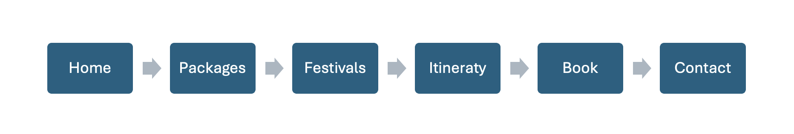

This project addresses the challenges young travelers face when planning cultural and international trips. Many young adults want to attend global festivals, explore new countries, and experience meaningful cultural events, but the process of planning international travel can feel overwhelming. Creating detailed itineraries, booking accommodations, organizing transportation, researching festivals, and finding authentic activities requires time, experience, and confidence.
This website represents a youth-focused travel agency that specializes in cultural festivals and immersive experiences. The agency simplifies the travel planning process by offering curated travel packages, human-designed custom itineraries, and organized festival-based trips. Instead of generic tourism, the business focuses on meaningful cultural adventures designed specifically for young travelers seeking growth, connection, and unforgettable experiences.
This idea was inspired by my first trip to another continent, specifically South Korea. That trip became one of the most meaningful and transformative experiences of my life. It opened my perspective, made the world feel bigger, and inspired me to continue traveling and exploring different cultures.
However, planning that first trip was complicated. Organizing itineraries, reservations, activities, and transportation for a 15+ day international trip required a lot of research and effort. The first time traveling abroad can feel intimidating because everything is unfamiliar. After that first experience, travel becomes easier and less stressful, but the initial process can discourage many people.
That experience inspired me to create a travel agency that makes international travel more accessible and less overwhelming for young adults. The goal is to simplify the planning process while helping travelers discover authentic adventures, cultural festivals, and meaningful experiences without unnecessary complications.
The target audience for this travel agency is young adults between the ages of 18 and 30 who are interested in cultural exploration, international festivals, and meaningful travel experiences. This includes college students, young professionals, and adventurous travelers who seek more than traditional tourism.
The agency is especially designed for individuals who may be traveling internationally for the first time and need guidance in planning immersive cultural experiences.
The website helps solve the problem of complicated and overwhelming travel planning. Many young travelers struggle with:
This agency simplifies the process by offering curated travel packages, festival-based experiences, and personalized itinerary services designed by real people who understand cultural travel.
Users will be able to browse travel packages, explore international festivals, submit booking requests, and request personalized itineraries based on their travel preferences.
Each travel package will include a public comment section where users can share interest in a specific trip, ask questions, or connect with others who may be considering the same experience. The website will collect and organize user submissions such as booking requests, itinerary forms, and general inquiries in a structured system that allows the agency to manage customer information efficiently.

Inside each page, the full description will appear.
For example:
Packages
“Travel Packages & Experiences”
Itinerary
“Request a Custom Itinerary”
Book
“Submit a Booking Request”
For now, the navigation bar will be simple and will not include dropdown menus. If the project develops further and I decide to add more subpages later in the semester, I may include dropdown features at that point.
The Home page introduces the travel agency and its mission. It highlights the focus on cultural festivals and meaningful experiences for young travelers. It may include featured trips, a short description of services, and navigation to other sections of the website.
The Packages page displays available travel experiences and destinations. Users can view trip descriptions, duration, pricing information, and what is included in each package. Each package will also include a comment section where users can share interest in the trip or ask questions.
The festivals page highlights important cultural events around the world, such as lantern festivals in Thailand, cherry blossom season in Japan, New Year in Brazil, Summer Concerts , and other major celebrations. This page provides information about each event and may connect users to related travel packages.
The Itinerary page allows users to request a personalized travel plan. Users can submit details such as destination, number of days, travel style, and preferences. This page collects user input to help create customized travel experiences.
The Book page allows users to submit a booking request for a selected travel package. Users will provide basic information such as name, email, travel date, and number of travelers.
The Contact page allows users to send general inquiries or questions to the agency. Users can submit their contact information and message through a form.
The website should feel modern, inviting, and inspiring, like a real travel agency that motivates users to start planning their next adventure. The goal is for visitors to feel excited and confident, almost as if they are already ready to book their trip.
The site will include images of cultural festivals, iconic landmarks, and meaningful travel experiences. Photos of events such as lantern festivals, cherry blossom season, and other cultural celebrations will help create an immersive and adventurous atmosphere.
In terms of colors, the current idea is to use blue and orange. Blue can represent trust, calmness, and reliability, while orange can bring energy and excitement to the design. However, the final color palette and overall layout may evolve as the project develops further in the semester.
Overall, the website should look like a professional travel agency platform, while still feeling youthful, adventurous, and culturally inspiring.
The website will be successful if users can move through the pages easily and understand how to use it without confusion. Success will be shown when users are able to browse travel packages, explore festival information, submit booking requests, request personalized itineraries, and leave comments on specific trips.
It will also be considered successful if all user submissions, such as booking forms, itinerary requests, comments, and contact messages, are properly collected and organized within the system. This will show that the platform is working smoothly and managing information correctly. If users actively submit forms and interact with the comment sections, it will demonstrate that the website is engaging and functioning as intended.